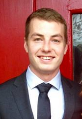

<div class="container contentback">
  <div class="row row-content pad40">
    <div class="col-xs-12 col-sm-3">
      
    </div>
    
    <div class="col-xs-12 col-sm-9">
      <h2>About Me</h2>
      
      <p>I am an Agricultural Engineering (similar to Mechanical) graduate from Iowa State University in Ames, Iowa.</p>
      <p>I have always had an interest in computers and technology, and took a few programming courses in college which initially sparked my interest in Software Engineering. Over the last two years I have taught myself a variety of programming languages, mainly in my spare time on nights and weekends (while I was working). I recently decided to pursue developing software as a full time career, <b>and am currently seeking full time employment in Houston, Texas.</b></p>
      
      <p>I am proficient in writing and reading Java and Javascript code, and I have also done some work with Python, Visual Basic for Applications, and Matlab/Simulink.</p>
      
      <p>I am familiar with a wide variety of modern development tools and best practices, and am always eager to learn new and faster ways of developing applications. Some of these tools include revision control such as Git, or development tools such as Eclipse (for Java), or Brackets/Atom for HTML/Javascript.</p>
      
      <p>While I have spent much time programming with Java, I have more recently focused on learning Javascript as well as many modern front end development tools. This site for example was created with AngularJS, and it uses Bootstrap for responsive design and to be mobile friendly. Some other tools that I comfortable using include Gulp/Grunt/NPM scripts, Postman, JS-Hint (or Linting), and basic server functions, among others.</p>
      
      <p></p>
    </div>
  </div>
</div>